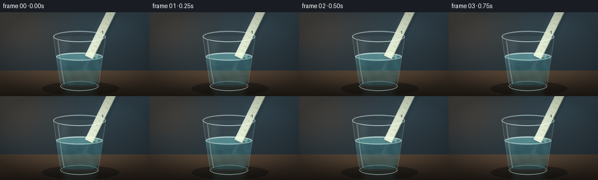
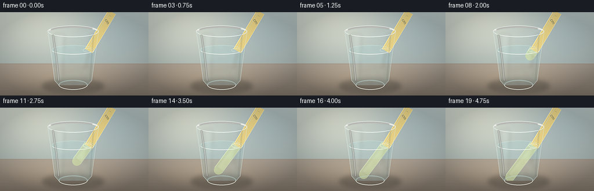
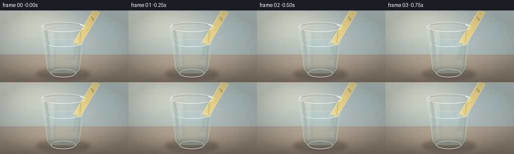
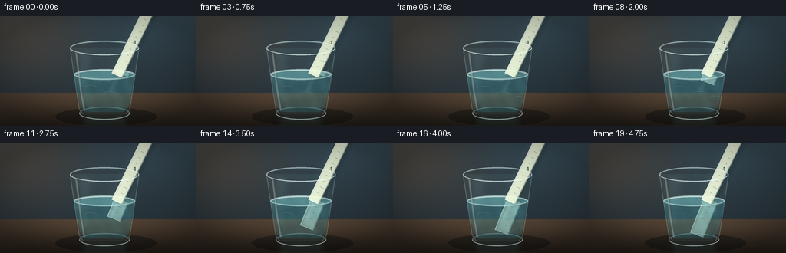
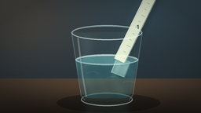
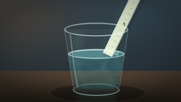
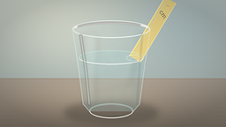
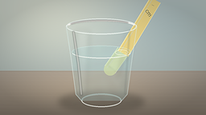
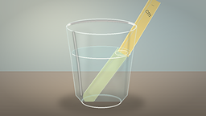

CODING AGENTS AS PIXEL WORLD MODELS
traex/DeepSeek-V4.1-Flash · phygen_075
点击播放 · 原生 RGB 像素
逐轮保存的候选
回放视频、检查图与代码变化。
每份候选均可单独播放。实际图片检查记录在下方工具轨迹中。
候选 01播放与检查图
点击播放 · 原生 RGB 像素


展开代码变化
--- 上一保存版本
+++ 本次保存版本
@@ -0,0 +1,595 @@
+from pathlib import Path
+import math
+
+import numpy as np
+from PIL import Image, ImageDraw, ImageFilter, ImageFont
+
+from artifact_io import save
+
+
+CASE_DIR = Path(__file__).resolve().parent
+W, H = 256, 144
+SCALE = 4
+FW, FH = W * SCALE, H * SCALE
+FRAMES = 20
+
+
+def rgba(color):
+ if len(color) == 3:
+ return (*color, 255)
+ return color
+
+
+def font(size):
+ try:
+ return ImageFont.load_default(size=size)
+ except TypeError:
+ return ImageFont.load_default()
+
+
+def composite(base, layer):
+ return Image.alpha_composite(base, layer)
+
+
+def rounded_line(draw, points, fill, width):
+ draw.line(points, fill=rgba(fill), width=int(width), joint="curve")
+ radius = width / 2
+ for x, y in (points[0], points[-1]):
+ draw.ellipse((x - radius, y - radius, x + radius, y + radius), fill=rgba(fill))
+
+
+def background():
+ yy, xx = np.mgrid[0:FH, 0:FW].astype(np.float32)
+ x = xx / (FW - 1)
+ y = yy / (FH - 1)
+
+ top = np.stack(
+ [
+ 36 + 13 * (1 - y),
+ 50 + 11 * (1 - y),
+ 59 + 8 * (1 - y),
+ ],
+ axis=-1,
+ )
+ cool_glow = np.exp(-(((x - 0.76) / 0.38) ** 2 + ((y - 0.08) / 0.30) ** 2))
+ warm_glow = np.exp(-(((x - 0.10) / 0.30) ** 2 + ((y - 0.16) / 0.42) ** 2))
+ top += cool_glow[..., None] * np.array([7, 16, 22], dtype=np.float32)
+ top += warm_glow[..., None] * np.array([27, 13, 3], dtype=np.float32)
+
+ table_start = 0.695
+ table_mix = np.clip((y - table_start) / (1 - table_start), 0, 1)
+ table = np.stack(
+ [
+ 71 - 37 * table_mix,
+ 61 - 32 * table_mix,
+ 51 - 28 * table_mix,
+ ],
+ axis=-1,
+ )
+ table += (
+ np.exp(-(((x - 0.52) / 0.43) ** 2 + ((y - 0.76) / 0.13) ** 2))[..., None]
+ * np.array([18, 12, 7], dtype=np.float32)
+ )
+ image = np.where((y >= table_start)[..., None], table, top)
+ image = np.clip(image, 0, 255).astype(np.uint8)
+ return Image.fromarray(image).convert("RGBA")
+
+
+def add_table_details(image):
+ layer = Image.new("RGBA", image.size, (0, 0, 0, 0))
+ draw = ImageDraw.Draw(layer, "RGBA")
+ s = SCALE
+
+ # A restrained reflection under the glass keeps it grounded on the table.
+ draw.ellipse((72 * s, 119 * s, 204 * s, 143 * s), fill=(4, 8, 10, 95))
+ reflection = Image.new("RGBA", image.size, (0, 0, 0, 0))
+ rd = ImageDraw.Draw(reflection, "RGBA")
+ rd.polygon(
+ [(103 * s, 123 * s), (169 * s, 123 * s), (162 * s, 141 * s), (111 * s, 141 * s)],
+ fill=(95, 166, 174, 30),
+ )
+ rd.ellipse((103 * s, 136 * s, 170 * s, 146 * s), fill=(111, 190, 196, 22))
+ reflection = reflection.filter(ImageFilter.GaussianBlur(4 * s))
+ layer = Image.alpha_composite(layer, reflection)
+
+ # Fine table grain, kept low contrast.
+ for i, y in enumerate(np.linspace(103, 143, 10)):
+ alpha = 12 if i % 2 else 8
+ draw.line(
+ [(0, y * s), (FW, (y + 0.8) * s)],
+ fill=(230, 210, 184, alpha),
+ width=max(1, s // 2),
+ )
+ return composite(image, layer)
+
+
+def glass_back(image):
+ layer = Image.new("RGBA", image.size, (0, 0, 0, 0))
+ draw = ImageDraw.Draw(layer, "RGBA")
+ s = SCALE
+
+ silhouette = [
+ (91 * s, 41 * s),
+ (181 * s, 41 * s),
+ (169 * s, 121 * s),
+ (164 * s, 128 * s),
+ (108 * s, 128 * s),
+ (103 * s, 121 * s),
+ ]
+ draw.polygon(silhouette, fill=(128, 195, 203, 18))
+ draw.arc(
+ (91 * s, 32 * s, 181 * s, 51 * s),
+ 180,
+ 360,
+ fill=(181, 229, 232, 105),
+ width=2 * s,
+ )
+ draw.arc(
+ (103 * s, 118 * s, 169 * s, 135 * s),
+ 180,
+ 360,
+ fill=(142, 202, 209, 66),
+ width=2 * s,
+ )
+
+ # Very soft interior wall glow.
+ glow = Image.new("RGBA", image.size, (0, 0, 0, 0))
+ gd = ImageDraw.Draw(glow, "RGBA")
+ gd.polygon(
+ [(98 * s, 42 * s), (123 * s, 42 * s), (111 * s, 122 * s), (105 * s, 122 * s)],
+ fill=(178, 235, 238, 18),
+ )
+ glow = glow.filter(ImageFilter.GaussianBlur(5 * s))
+ layer = Image.alpha_composite(layer, glow)
+ return composite(image, layer)
+
+
+def water_mask_shape():
+ mask = Image.new("L", (FW, FH), 0)
+ draw = ImageDraw.Draw(mask)
+ s = SCALE
+ draw.polygon(
+ [
+ (96 * s, 76 * s),
+ (176 * s, 76 * s),
+ (167 * s, 119 * s),
+ (161 * s, 125 * s),
+ (110 * s, 125 * s),
+ (105 * s, 119 * s),
+ ],
+ fill=255,
+ )
+ draw.ellipse((96 * s, 69 * s, 176 * s, 83 * s), fill=255)
+ return mask
+
+
+def make_water_body(image, frame):
+ s = SCALE
+ yy, xx = np.mgrid[0:FH, 0:FW].astype(np.float32)
+ x = xx / (FW - 1)
+ y = yy / (FH - 1)
+ phase = frame / (FRAMES - 1)
+
+ vertical = np.clip((y - 0.49) / 0.40, 0, 1)
+ water_rgb = np.stack(
+ [
+ 47 + 25 * (1 - vertical),
+ 123 + 49 * (1 - vertical),
+ 141 + 41 * (1 - vertical),
+ ],
+ axis=-1,
+ )
+ caustic = (
+ np.sin(36 * x + 14 * y + phase * 1.2)
+ * np.sin(22 * x - 29 * y - phase * 0.7)
+ )
+ caustic += 0.55 * np.sin(78 * x - 19 * y + phase * 1.8)
+ water_rgb += np.clip(caustic, -0.7, 1.1)[..., None] * np.array([9, 18, 16])
+ water = np.empty((FH, FW, 4), dtype=np.uint8)
+ water[..., :3] = np.clip(water_rgb, 0, 255).astype(np.uint8)
+ water[..., 3] = 77
+ water_img = Image.fromarray(water, "RGBA")
+ mask = water_mask_shape()
+ water_img.putalpha(Image.composite(water_img.getchannel("A"), Image.new("L", (FW, FH), 0), mask))
+
+ # A brighter layer near the surface makes the water volume legible.
+ surface = Image.new("RGBA", image.size, (0, 0, 0, 0))
+ sd = ImageDraw.Draw(surface, "RGBA")
+ sd.ellipse(
+ (96 * s, 69 * s, 176 * s, 83 * s),
+ fill=(143, 222, 226, 75),
+ outline=(207, 247, 246, 150),
+ width=2 * s,
+ )
+ sd.arc(
+ (98 * s, 70 * s, 174 * s, 82 * s),
+ 194,
+ 346,
+ fill=(245, 255, 252, 180),
+ width=max(1, int(1.3 * s)),
+ )
+
+ image = composite(image, water_img)
+ image = composite(image, surface)
+ return image
+
+
+def ruler_edges(center_y, center_x, half_width, angle):
+ ux, uy = math.cos(angle), math.sin(angle)
+ nx, ny = -uy, ux
+ left = (center_x + nx * half_width, center_y + ny * half_width)
+ right = (center_x - nx * half_width, center_y - ny * half_width)
+ return left, right, (ux, uy), (nx, ny)
+
+
+def draw_ruler_segment(draw, p0, p1, half_width, fill, outline, angle, ticks=False):
+ s = SCALE
+ ux, uy = math.cos(angle), math.sin(angle)
+ nx, ny = -uy, ux
+ a = (p0[0] * s, p0[1] * s)
+ b = (p1[0] * s, p1[1] * s)
+ hw = half_width * s
+ poly = [
+ (a[0] + nx * hw, a[1] + ny * hw),
+ (b[0] + nx * hw, b[1] + ny * hw),
+ (b[0] - nx * hw, b[1] - ny * hw),
+ (a[0] - nx * hw, a[1] - ny * hw),
+ ]
+ draw.polygon(poly, fill=rgba(fill), outline=rgba(outline), width=max(1, int(0.8 * s)))
+
+ # One bright edge and one cooler shadow edge give the plastic thickness.
+ rounded_line(
+ draw,
+ [(a[0] + nx * (hw - 0.8 * s), a[1] + ny * (hw - 0.8 * s)),
+ (b[0] + nx * (hw - 0.8 * s), b[1] + ny * (hw - 0.8 * s))],
+ (239, 255, 248, 190),
+ max(1, 0.9 * s),
+ )
+ rounded_line(
+ draw,
+ [(a[0] - nx * (hw - 0.6 * s), a[1] - ny * (hw - 0.6 * s)),
+ (b[0] - nx * (hw - 0.6 * s), b[1] - ny * (hw - 0.6 * s))],
+ (43, 93, 91, 125),
+ max(1, 0.7 * s),
+ )
+
+ if not ticks:
+ return
+
+ length = math.hypot(b[0] - a[0], b[1] - a[1])
+ spacing = 8.6 * s
+ count = int(length // spacing)
+ start = (a[0], a[1])
+ for i in range(1, count):
+ cx = start[0] + ux * i * spacing
+ cy = start[1] + uy * i * spacing
+ major = i % 5 == 0
+ tick_len = (0.70 if major else 0.42) * hw
+ tick_color = (24, 73, 73, 145) if major else (35, 91, 89, 105)
+ draw.line(
+ [
+ (cx + nx * hw * 0.10, cy + ny * hw * 0.10),
+ (cx + nx * (hw * 0.10 - tick_len), cy + ny * (hw * 0.10 - tick_len)),
+ ],
+ fill=tick_color,
+ width=max(1, int((0.45 if major else 0.32) * s)),
+ )
+
+
+def draw_submerged_ruler(image, tip_y, frame):
+ s = SCALE
+ water_y = 76.0
+ x_surface = 153.0
+ actual_slope = -0.49
+ apparent_slope = -0.405
+ angle = math.atan2(1.0, apparent_slope)
+ apparent_surface_x = x_surface + 4.8
+ tip_x = apparent_surface_x + (tip_y - water_y) * apparent_slope
+
+ layer = Image.new("RGBA", image.size, (0, 0, 0, 0))
+ draw = ImageDraw.Draw(layer, "RGBA")
+ p0 = (apparent_surface_x, water_y - 0.5)
+ p1 = (tip_x, tip_y)
+ draw_ruler_segment(
+ draw,
+ p0,
+ p1,
+ 9.3,
+ (213, 241, 227, 163),
+ (209, 250, 242, 210),
+ angle,
+ ticks=True,
+ )
+
+ # A translucent displaced ghost reads as optical bending inside the water.
+ ghost = Image.new("RGBA", image.size, (0, 0, 0, 0))
+ gd = ImageDraw.Draw(ghost, "RGBA")
+ draw_ruler_segment(
+ gd,
+ (apparent_surface_x + 2.0, water_y + 1.0),
+ (tip_x + 2.2, tip_y - 2.0),
+ 8.2,
+ (174, 241, 234, 30),
+ (211, 255, 251, 40),
+ angle,
+ ticks=False,
+ )
+ ghost = ghost.filter(ImageFilter.GaussianBlur(1.3 * s))
+ layer = Image.alpha_composite(layer, ghost)
+
+ # Clip the submerged optical segment to the water volume.
+ mask = water_mask_shape()
+ layer.putalpha(Image.composite(layer.getchannel("A"), Image.new("L", (FW, FH), 0), mask))
+ return composite(image, layer)
+
+
+def draw_above_ruler(image, tip_y, frame):
+ s = SCALE
+ water_y = 76.0
+ x_surface = 153.0
+ slope = -0.49
+ angle = math.atan2(1.0, slope)
+ ux, uy = math.cos(angle), math.sin(angle)
+ surface = (x_surface, water_y)
+ start = (surface[0] - ux * 235, surface[1] - uy * 235)
+ end = (surface[0] + ux * 1.5, surface[1] + uy * 1.5)
+
+ shadow = Image.new("RGBA", image.size, (0, 0, 0, 0))
+ sd = ImageDraw.Draw(shadow, "RGBA")
+ draw_ruler_segment(
+ sd,
+ (start[0] + 2.0, start[1] + 2.0),
+ (end[0] + 2.0, end[1] + 2.0),
+ 8.7,
+ (8, 20, 20, 65),
+ (8, 20, 20, 60),
+ angle,
+ )
+ shadow = shadow.filter(ImageFilter.GaussianBlur(2.2 * s))
+ image = composite(image, shadow)
+
+ layer = Image.new("RGBA", image.size, (0, 0, 0, 0))
+ draw = ImageDraw.Draw(layer, "RGBA")
+ draw_ruler_segment(
+ draw,
+ start,
+ end,
+ 7.4,
+ (235, 244, 218, 228),
+ (247, 255, 240, 245),
+ angle,
+ ticks=True,
+ )
+
+ # Ruler numbers at major ticks.
+ fnt = font(7 * s)
+ ux, uy = math.cos(angle), math.sin(angle)
+ nx, ny = -uy, ux
+ for value in range(1, 8):
+ distance = (value * 43 + 6) * s
+ cx = end[0] * s - ux * distance
+ cy = end[1] * s - uy * distance
+ if not (-20 * s < cx < (W + 20) * s and -20 * s < cy < (H + 20) * s):
+ continue
+ tx = cx - nx * 1.7 * s
+ ty = cy - ny * 1.7 * s
+ draw.text(
+ (tx, ty),
+ str(value),
+ font=fnt,
+ fill=(29, 79, 76, 160),
+ anchor="mm",
+ stroke_width=max(1, s // 3),
+ stroke_fill=(241, 250, 224, 70),
+ )
+
+ return composite(image, layer)
+
+
+def draw_water_optics(image, tip_y, frame):
+ s = SCALE
+ phase = frame / (FRAMES - 1)
+ submerged = np.clip((tip_y - 76.0) / 24.0, 0, 1)
+ intersection = (153.0, 76.0)
+
+ # Soft reflected shaft from the ruler into the water.
+ refl = Image.new("RGBA", image.size, (0, 0, 0, 0))
+ rd = ImageDraw.Draw(refl, "RGBA")
+ for i in range(3):
+ offset = (i - 1) * 2.3
+ rd.line(
+ [
+ ((intersection[0] + offset + 1) * s, 79 * s),
+ ((intersection[0] + offset - 10) * s, 101 * s),
+ ],
+ fill=(208, 252, 244, 34 - i * 7),
+ width=max(1, int((3.0 - i * 0.6) * s)),
+ )
+ refl = refl.filter(ImageFilter.GaussianBlur(2.5 * s))
+ refl.putalpha(
+ Image.composite(
+ refl.getchannel("A"),
+ Image.new("L", (FW, FH), 0),
+ water_mask_shape(),
+ )
+ )
+ image = composite(image, refl)
+
+ layer = Image.new("RGBA", image.size, (0, 0, 0, 0))
+ draw = ImageDraw.Draw(layer, "RGBA")
+
+ # Expanding meniscus rings, strongest after first contact.
+ for ring in range(3):
+ age = (phase * 1.55 - ring * 0.25) % 1.0
+ radius = (3.5 + age * 17.0) * submerged
+ alpha = int((1.0 - age) * (52 + 80 * submerged))
+ if radius <= 4 or alpha <= 3:
+ continue
+ rx = radius * s
+ ry = radius * 0.34 * s
+ cx, cy = intersection[0] * s, 77.0 * s
+ draw.ellipse(
+ (cx - rx, cy - ry, cx + rx, cy + ry),
+ outline=(211, 251, 246, alpha),
+ width=max(1, int(0.55 * s)),
+ )
+
+ # Bright waterline interruption exactly where the ruler crosses.
+ for i, dx in enumerate((-8, -4, 0, 5, 9)):
+ y = 76.1 + (i % 2) * 0.5 + math.sin(phase * 8 + i) * 0.35
+ draw.line(
+ [((intersection[0] + dx) * s, y * s), ((intersection[0] + dx + 3) * s, (y + 0.5) * s)],
+ fill=(239, 255, 252, 150 - abs(dx) * 7),
+ width=max(1, int(0.7 * s)),
+ )
+
+ # Two glassy caustic ribbons beneath the surface.
+ for i, x0 in enumerate((118, 143, 164)):
+ yy = 94 + i * 7 + 1.5 * math.sin(phase * 3.1 + i)
+ draw.arc(
+ ((x0 - 9) * s, (yy - 4) * s, (x0 + 9) * s, (yy + 4) * s),
+ 205,
+ 338,
+ fill=(218, 253, 247, 35),
+ width=max(1, int(0.7 * s)),
+ )
+ return composite(image, layer)
+
+
+def glass_front(image, frame):
+ s = SCALE
+ layer = Image.new("RGBA", image.size, (0, 0, 0, 0))
+ draw = ImageDraw.Draw(layer, "RGBA")
+
+ # Outer silhouette and full rim.
+ draw.line(
+ [(91 * s, 41 * s), (97 * s, 82 * s), (103 * s, 121 * s), (108 * s, 128 * s)],
+ fill=(177, 222, 226, 72),
+ width=max(1, int(1.1 * s)),
+ joint="curve",
+ )
+ draw.line(
+ [(181 * s, 41 * s), (175 * s, 82 * s), (169 * s, 121 * s), (164 * s, 128 * s)],
+ fill=(177, 222, 226, 72),
+ width=max(1, int(1.1 * s)),
+ joint="curve",
+ )
+ draw.arc(
+ (91 * s, 32 * s, 181 * s, 51 * s),
+ 0,
+ 180,
+ fill=(224, 248, 248, 195),
+ width=max(1, int(1.4 * s)),
+ )
+ draw.arc(
+ (91 * s, 32 * s, 181 * s, 51 * s),
+ 178,
+ 362,
+ fill=(236, 254, 252, 105),
+ width=max(1, s),
+ )
+
+ # Base ring.
+ draw.arc(
+ (103 * s, 118 * s, 169 * s, 135 * s),
+ 0,
+ 180,
+ fill=(210, 244, 244, 165),
+ width=max(1, int(1.35 * s)),
+ )
+ draw.arc(
+ (103 * s, 118 * s, 169 * s, 135 * s),
+ 180,
+ 360,
+ fill=(156, 211, 215, 75),
+ width=max(1, s),
+ )
+
+ # Broad left highlight and narrow right kicker.
+ highlight = Image.new("RGBA", image.size, (0, 0, 0, 0))
+ hd = ImageDraw.Draw(highlight, "RGBA")
+ hd.line(
+ [(99 * s, 47 * s), (105 * s, 96 * s), (110 * s, 124 * s)],
+ fill=(242, 255, 253, 165),
+ width=max(1, int(2.4 * s)),
+ )
+ hd.line(
+ [(173 * s, 50 * s), (168 * s, 92 * s), (165 * s, 119 * s)],
+ fill=(209, 248, 248, 105),
+ width=max(1, int(1.0 * s)),
+ )
+ highlight = highlight.filter(ImageFilter.GaussianBlur(1.0 * s))
+ layer = Image.alpha_composite(layer, highlight)
+
+ # Thin front-surface glints, shifted very slightly over time.
+ phase = frame / (FRAMES - 1)
+ for i, x in enumerate((117, 130, 159)):
+ y0 = 57 + i * 3 + math.sin(phase * 4 + i) * 1.5
+ draw.line(
+ [(x * s, y0 * s), ((x + 2) * s, (y0 + 13) * s)],
+ fill=(230, 255, 253, 34),
+ width=max(1, int(0.55 * s)),
+ )
+
+ return composite(image, layer)
+
+
+def postprocess(image, frame):
+ s = SCALE
+ phase = frame / (FRAMES - 1)
+ image = image.convert("RGB")
+
+ # Gentle bloom around the brightest glass and water highlights.
+ arr = np.asarray(image).astype(np.float32)
+ luma = arr.mean(axis=2)
+ bright = np.clip((luma - 178) / 77, 0, 1)
+ bloom = Image.fromarray((bright * 255).astype(np.uint8), "L").filter(
+ ImageFilter.GaussianBlur(5 * s)
+ )
+ bloom_arr = np.asarray(bloom).astype(np.float32)[..., None] / 255.0
+ arr += bloom_arr * np.array([25, 39, 38], dtype=np.float32)
+
+ # Vignette and a restrained filmic grade.
+ yy, xx = np.mgrid[0:FH, 0:FW].astype(np.float32)
+ nx = (xx / (FW - 1) - 0.5) / 0.5
+ ny = (yy / (FH - 1) - 0.5) / 0.5
+ vignette = np.clip(1.0 - 0.20 * (nx * nx + ny * ny), 0.74, 1.0)
+ arr *= vignette[..., None]
+ arr[..., 0] *= 1.025
+ arr[..., 2] *= 0.985
+ arr = np.clip(arr, 0, 255)
+
+ # A tiny deterministic sensor grain prevents plastic-flat gradients.
+ rng = np.random.default_rng(1000 + frame)
+ grain = rng.normal(0, 1.55, arr.shape).astype(np.float32)
+ arr += grain
+ arr = np.clip(arr, 0, 255).astype(np.uint8)
+ result = Image.fromarray(arr, "RGB")
+ result = result.resize((W, H), Image.Resampling.LANCZOS)
+ return np.asarray(result, dtype=np.uint8)
+
+
+def render_frame(frame):
+ t = frame / (FRAMES - 1)
+ # Smooth, unhurried entry: first contact happens just after the opening beat.
+ eased = t * t * (3 - 2 * t)
+ tip_y = 66.0 + 54.5 * eased
+
+ image = background()
+ image = add_table_details(image)
+ image = glass_back(image)
+ image = draw_submerged_ruler(image, tip_y, frame)
+ image = make_water_body(image, frame)
+ image = draw_water_optics(image, tip_y, frame)
+ image = draw_above_ruler(image, tip_y, frame)
+ image = glass_front(image, frame)
+ return postprocess(image, frame)
+
+
+def main():
+ frames = np.stack([render_frame(i) for i in range(FRAMES)])
+ save(frames, CASE_DIR)
+
+
+if __name__ == "__main__":
+ main()
候选 02播放与检查图
点击播放 · 原生 RGB 像素

展开代码变化
--- 上一保存版本
+++ 本次保存版本
@@ -9,33 +9,40 @@
CASE_DIR = Path(__file__).resolve().parent
W, H = 256, 144
-SCALE = 4
-FW, FH = W * SCALE, H * SCALE
FRAMES = 20
-
-
-def rgba(color):
- if len(color) == 3:
- return (*color, 255)
- return color
-
-
-def font(size):
+S = 4
+FW, FH = W * S, H * S
+
+WATER_Y = 65.0
+RULER_SURFACE = (151.0, WATER_Y)
+ABOVE_SLOPE = -0.65
+BELOW_SLOPE = -0.78
+
+
+def col(color):
+ return color if len(color) == 4 else (*color, 255)
+
+
+def alpha_layer():
+ return Image.new("RGBA", (FW, FH), (0, 0, 0, 0))
+
+
+def composite(base, layer):
+ return Image.alpha_composite(base, layer)
+
+
+def label_font(size):
try:
return ImageFont.load_default(size=size)
except TypeError:
return ImageFont.load_default()
-def composite(base, layer):
- return Image.alpha_composite(base, layer)
-
-
-def rounded_line(draw, points, fill, width):
- draw.line(points, fill=rgba(fill), width=int(width), joint="curve")
+def polyline(draw, points, fill, width):
+ draw.line(points, fill=col(fill), width=max(1, int(width)), joint="curve")
radius = width / 2
for x, y in (points[0], points[-1]):
- draw.ellipse((x - radius, y - radius, x + radius, y + radius), fill=rgba(fill))
+ draw.ellipse((x - radius, y - radius, x + radius, y + radius), fill=col(fill))
def background():
@@ -43,546 +50,482 @@
x = xx / (FW - 1)
y = yy / (FH - 1)
- top = np.stack(
- [
- 36 + 13 * (1 - y),
- 50 + 11 * (1 - y),
- 59 + 8 * (1 - y),
- ],
+ wall = np.stack([187 - 24 * y, 199 - 22 * y, 194 - 20 * y], axis=-1)
+ window = np.exp(-(((x - 0.25) / 0.31) ** 2 + ((y - 0.16) / 0.38) ** 2))
+ wall += window[..., None] * np.array([32, 28, 20], dtype=np.float32)
+ cool = np.exp(-(((x - 0.82) / 0.28) ** 2 + ((y - 0.18) / 0.43) ** 2))
+ wall += cool[..., None] * np.array([-12, -5, 1], dtype=np.float32)
+
+ horizon = 0.615
+ table_mix = np.clip((y - horizon) / (1 - horizon), 0, 1)
+ table = np.stack(
+ [164 - 40 * table_mix, 157 - 42 * table_mix, 146 - 43 * table_mix],
axis=-1,
)
- cool_glow = np.exp(-(((x - 0.76) / 0.38) ** 2 + ((y - 0.08) / 0.30) ** 2))
- warm_glow = np.exp(-(((x - 0.10) / 0.30) ** 2 + ((y - 0.16) / 0.42) ** 2))
- top += cool_glow[..., None] * np.array([7, 16, 22], dtype=np.float32)
- top += warm_glow[..., None] * np.array([27, 13, 3], dtype=np.float32)
-
- table_start = 0.695
- table_mix = np.clip((y - table_start) / (1 - table_start), 0, 1)
- table = np.stack(
- [
- 71 - 37 * table_mix,
- 61 - 32 * table_mix,
- 51 - 28 * table_mix,
- ],
- axis=-1,
- )
table += (
- np.exp(-(((x - 0.52) / 0.43) ** 2 + ((y - 0.76) / 0.13) ** 2))[..., None]
- * np.array([18, 12, 7], dtype=np.float32)
- )
- image = np.where((y >= table_start)[..., None], table, top)
+ np.exp(-(((x - 0.39) / 0.40) ** 2 + ((y - 0.77) / 0.18) ** 2))[..., None]
+ * np.array([26, 21, 13], dtype=np.float32)
+ )
+ image = np.where((y >= horizon)[..., None], table, wall)
image = np.clip(image, 0, 255).astype(np.uint8)
return Image.fromarray(image).convert("RGBA")
-def add_table_details(image):
- layer = Image.new("RGBA", image.size, (0, 0, 0, 0))
- draw = ImageDraw.Draw(layer, "RGBA")
- s = SCALE
-
- # A restrained reflection under the glass keeps it grounded on the table.
- draw.ellipse((72 * s, 119 * s, 204 * s, 143 * s), fill=(4, 8, 10, 95))
- reflection = Image.new("RGBA", image.size, (0, 0, 0, 0))
- rd = ImageDraw.Draw(reflection, "RGBA")
- rd.polygon(
- [(103 * s, 123 * s), (169 * s, 123 * s), (162 * s, 141 * s), (111 * s, 141 * s)],
- fill=(95, 166, 174, 30),
- )
- rd.ellipse((103 * s, 136 * s, 170 * s, 146 * s), fill=(111, 190, 196, 22))
- reflection = reflection.filter(ImageFilter.GaussianBlur(4 * s))
- layer = Image.alpha_composite(layer, reflection)
-
- # Fine table grain, kept low contrast.
- for i, y in enumerate(np.linspace(103, 143, 10)):
- alpha = 12 if i % 2 else 8
+def table_and_shadow(image):
+ layer = alpha_layer()
+ draw = ImageDraw.Draw(layer, "RGBA")
+ draw.line([(0, 89 * S), (FW, 90 * S)], fill=(118, 111, 98, 32), width=S)
+ for i, y in enumerate(np.linspace(91, 143, 12)):
+ alpha = 12 if i % 3 else 18
draw.line(
- [(0, y * s), (FW, (y + 0.8) * s)],
- fill=(230, 210, 184, alpha),
- width=max(1, s // 2),
+ [(0, y * S), (FW, (y + 0.6) * S)],
+ fill=(238, 228, 205, alpha),
+ width=max(1, S // 2),
)
- return composite(image, layer)
+
+ shadow = alpha_layer()
+ sd = ImageDraw.Draw(shadow, "RGBA")
+ sd.ellipse((73 * S, 116 * S, 179 * S, 139 * S), fill=(54, 51, 43, 92))
+ sd.ellipse((87 * S, 119 * S, 165 * S, 137 * S), fill=(45, 45, 41, 76))
+ shadow = shadow.filter(ImageFilter.GaussianBlur(4 * S))
+ layer = Image.alpha_composite(layer, shadow)
+ return composite(image, layer)
+
+
+def water_mask():
+ mask = Image.new("L", (FW, FH), 0)
+ draw = ImageDraw.Draw(mask)
+ draw.polygon(
+ [
+ (89 * S, WATER_Y * S),
+ (163 * S, WATER_Y * S),
+ (158 * S, 118 * S),
+ (151 * S, 126 * S),
+ (101 * S, 126 * S),
+ (94 * S, 118 * S),
+ ],
+ fill=255,
+ )
+ draw.ellipse((89 * S, 57 * S, 163 * S, 73 * S), fill=255)
+ return mask
+
+
+def apply_mask(layer, mask):
+ layer.putalpha(
+ Image.composite(layer.getchannel("A"), Image.new("L", (FW, FH), 0), mask)
+ )
+ return layer
def glass_back(image):
- layer = Image.new("RGBA", image.size, (0, 0, 0, 0))
- draw = ImageDraw.Draw(layer, "RGBA")
- s = SCALE
-
- silhouette = [
- (91 * s, 41 * s),
- (181 * s, 41 * s),
- (169 * s, 121 * s),
- (164 * s, 128 * s),
- (108 * s, 128 * s),
- (103 * s, 121 * s),
- ]
- draw.polygon(silhouette, fill=(128, 195, 203, 18))
+ layer = alpha_layer()
+ draw = ImageDraw.Draw(layer, "RGBA")
+ draw.polygon(
+ [
+ (82 * S, 33 * S),
+ (170 * S, 33 * S),
+ (158 * S, 118 * S),
+ (151 * S, 126 * S),
+ (101 * S, 126 * S),
+ (94 * S, 118 * S),
+ ],
+ fill=(196, 226, 224, 25),
+ )
+ draw.ellipse((82 * S, 23 * S, 170 * S, 43 * S), fill=(219, 239, 236, 30))
draw.arc(
- (91 * s, 32 * s, 181 * s, 51 * s),
+ (82 * S, 23 * S, 170 * S, 43 * S),
180,
360,
- fill=(181, 229, 232, 105),
- width=2 * s,
+ fill=(238, 250, 247, 130),
+ width=2 * S,
)
draw.arc(
- (103 * s, 118 * s, 169 * s, 135 * s),
+ (101 * S, 117 * S, 151 * S, 134 * S),
180,
360,
- fill=(142, 202, 209, 66),
- width=2 * s,
- )
-
- # Very soft interior wall glow.
- glow = Image.new("RGBA", image.size, (0, 0, 0, 0))
+ fill=(212, 237, 234, 95),
+ width=2 * S,
+ )
+
+ glow = alpha_layer()
gd = ImageDraw.Draw(glow, "RGBA")
gd.polygon(
- [(98 * s, 42 * s), (123 * s, 42 * s), (111 * s, 122 * s), (105 * s, 122 * s)],
- fill=(178, 235, 238, 18),
- )
- glow = glow.filter(ImageFilter.GaussianBlur(5 * s))
+ [(94 * S, 38 * S), (111 * S, 38 * S), (107 * S, 119 * S), (97 * S, 119 * S)],
+ fill=(246, 253, 248, 31),
+ )
+ gd.polygon(
+ [(156 * S, 37 * S), (165 * S, 37 * S), (156 * S, 119 * S), (150 * S, 119 * S)],
+ fill=(101, 150, 148, 21),
+ )
+ glow = glow.filter(ImageFilter.GaussianBlur(3 * S))
layer = Image.alpha_composite(layer, glow)
return composite(image, layer)
-def water_mask_shape():
- mask = Image.new("L", (FW, FH), 0)
- draw = ImageDraw.Draw(mask)
- s = SCALE
- draw.polygon(
- [
- (96 * s, 76 * s),
- (176 * s, 76 * s),
- (167 * s, 119 * s),
- (161 * s, 125 * s),
- (110 * s, 125 * s),
- (105 * s, 119 * s),
- ],
- fill=255,
- )
- draw.ellipse((96 * s, 69 * s, 176 * s, 83 * s), fill=255)
- return mask
-
-
-def make_water_body(image, frame):
- s = SCALE
+def water_body(image, frame):
+ phase = frame / (FRAMES - 1)
yy, xx = np.mgrid[0:FH, 0:FW].astype(np.float32)
x = xx / (FW - 1)
y = yy / (FH - 1)
- phase = frame / (FRAMES - 1)
-
- vertical = np.clip((y - 0.49) / 0.40, 0, 1)
- water_rgb = np.stack(
- [
- 47 + 25 * (1 - vertical),
- 123 + 49 * (1 - vertical),
- 141 + 41 * (1 - vertical),
- ],
- axis=-1,
- )
+ depth = np.clip((y - WATER_Y / H) / ((126 - WATER_Y) / H), 0, 1)
+ water_rgb = np.stack([162 + 15 * depth, 211 + 6 * depth, 213 + 7 * depth], axis=-1)
caustic = (
- np.sin(36 * x + 14 * y + phase * 1.2)
- * np.sin(22 * x - 29 * y - phase * 0.7)
- )
- caustic += 0.55 * np.sin(78 * x - 19 * y + phase * 1.8)
- water_rgb += np.clip(caustic, -0.7, 1.1)[..., None] * np.array([9, 18, 16])
+ np.sin(47 * x + 17 * y + phase * 1.4)
+ * np.sin(26 * x - 36 * y - phase * 0.9)
+ + 0.5 * np.sin(92 * x - 12 * y + phase * 1.8)
+ )
+ water_rgb += np.clip(caustic, -0.8, 1.0)[..., None] * np.array([6, 11, 10])
water = np.empty((FH, FW, 4), dtype=np.uint8)
water[..., :3] = np.clip(water_rgb, 0, 255).astype(np.uint8)
- water[..., 3] = 77
- water_img = Image.fromarray(water, "RGBA")
- mask = water_mask_shape()
- water_img.putalpha(Image.composite(water_img.getchannel("A"), Image.new("L", (FW, FH), 0), mask))
-
- # A brighter layer near the surface makes the water volume legible.
- surface = Image.new("RGBA", image.size, (0, 0, 0, 0))
- sd = ImageDraw.Draw(surface, "RGBA")
- sd.ellipse(
- (96 * s, 69 * s, 176 * s, 83 * s),
- fill=(143, 222, 226, 75),
- outline=(207, 247, 246, 150),
- width=2 * s,
- )
- sd.arc(
- (98 * s, 70 * s, 174 * s, 82 * s),
- 194,
- 346,
- fill=(245, 255, 252, 180),
- width=max(1, int(1.3 * s)),
- )
-
- image = composite(image, water_img)
- image = composite(image, surface)
- return image
-
-
-def ruler_edges(center_y, center_x, half_width, angle):
- ux, uy = math.cos(angle), math.sin(angle)
+ water[..., 3] = 38 + 14 * depth
+ layer = Image.fromarray(water, "RGBA")
+ apply_mask(layer, water_mask())
+ return composite(image, layer)
+
+
+def segment_geometry(start, end, half_width):
+ dx, dy = end[0] - start[0], end[1] - start[1]
+ length = math.hypot(dx, dy)
+ ux, uy = dx / length, dy / length
nx, ny = -uy, ux
- left = (center_x + nx * half_width, center_y + ny * half_width)
- right = (center_x - nx * half_width, center_y - ny * half_width)
- return left, right, (ux, uy), (nx, ny)
-
-
-def draw_ruler_segment(draw, p0, p1, half_width, fill, outline, angle, ticks=False):
- s = SCALE
- ux, uy = math.cos(angle), math.sin(angle)
- nx, ny = -uy, ux
- a = (p0[0] * s, p0[1] * s)
- b = (p1[0] * s, p1[1] * s)
- hw = half_width * s
- poly = [
- (a[0] + nx * hw, a[1] + ny * hw),
- (b[0] + nx * hw, b[1] + ny * hw),
- (b[0] - nx * hw, b[1] - ny * hw),
- (a[0] - nx * hw, a[1] - ny * hw),
+ p0 = (start[0] * S, start[1] * S)
+ p1 = (end[0] * S, end[1] * S)
+ hw = half_width * S
+ return p0, p1, (ux, uy), (nx, ny), hw, length
+
+
+def draw_plastic_ruler(
+ draw,
+ start,
+ end,
+ half_width,
+ fill,
+ edge,
+ tick_color,
+ tick_scale=1.0,
+ rounded_end=False,
+):
+ p0, p1, uv, normal, hw, length = segment_geometry(start, end, half_width)
+ nx, ny = normal
+ polygon = [
+ (p0[0] + nx * hw, p0[1] + ny * hw),
+ (p1[0] + nx * hw, p1[1] + ny * hw),
+ (p1[0] - nx * hw, p1[1] - ny * hw),
+ (p0[0] - nx * hw, p0[1] - ny * hw),
]
- draw.polygon(poly, fill=rgba(fill), outline=rgba(outline), width=max(1, int(0.8 * s)))
-
- # One bright edge and one cooler shadow edge give the plastic thickness.
- rounded_line(
+ draw.polygon(polygon, fill=col(fill))
+ if rounded_end:
+ draw.ellipse((p1[0] - hw, p1[1] - hw, p1[0] + hw, p1[1] + hw), fill=col(fill))
+
+ polyline(
draw,
- [(a[0] + nx * (hw - 0.8 * s), a[1] + ny * (hw - 0.8 * s)),
- (b[0] + nx * (hw - 0.8 * s), b[1] + ny * (hw - 0.8 * s))],
- (239, 255, 248, 190),
- max(1, 0.9 * s),
- )
- rounded_line(
+ [(p0[0] + nx * hw, p0[1] + ny * hw), (p1[0] + nx * hw, p1[1] + ny * hw)],
+ edge,
+ 0.75 * S,
+ )
+ polyline(
draw,
- [(a[0] - nx * (hw - 0.6 * s), a[1] - ny * (hw - 0.6 * s)),
- (b[0] - nx * (hw - 0.6 * s), b[1] - ny * (hw - 0.6 * s))],
- (43, 93, 91, 125),
- max(1, 0.7 * s),
- )
-
- if not ticks:
- return
-
- length = math.hypot(b[0] - a[0], b[1] - a[1])
- spacing = 8.6 * s
- count = int(length // spacing)
- start = (a[0], a[1])
+ [(p0[0] - nx * hw, p0[1] - ny * hw), (p1[0] - nx * hw, p1[1] - ny * hw)],
+ edge,
+ 0.65 * S,
+ )
+ polyline(
+ draw,
+ [
+ (p0[0] + nx * hw * 0.54, p0[1] + ny * hw * 0.54),
+ (p1[0] + nx * hw * 0.54, p1[1] + ny * hw * 0.54),
+ ],
+ (255, 250, 204, 100),
+ 0.7 * S,
+ )
+
+ spacing = 7.4 * S
+ count = int(length / spacing)
for i in range(1, count):
- cx = start[0] + ux * i * spacing
- cy = start[1] + uy * i * spacing
+ cx = p0[0] + uv[0] * i * spacing
+ cy = p0[1] + uv[1] * i * spacing
major = i % 5 == 0
- tick_len = (0.70 if major else 0.42) * hw
- tick_color = (24, 73, 73, 145) if major else (35, 91, 89, 105)
+ tick_len = (0.70 if major else 0.42) * hw * tick_scale
+ side = 1 if i % 2 else -1
+ inner = 0.12 * hw
draw.line(
[
- (cx + nx * hw * 0.10, cy + ny * hw * 0.10),
- (cx + nx * (hw * 0.10 - tick_len), cy + ny * (hw * 0.10 - tick_len)),
+ (cx + nx * inner * side, cy + ny * inner * side),
+ (
+ cx + nx * (inner * side - tick_len),
+ cy + ny * (inner * side - tick_len),
+ ),
],
- fill=tick_color,
- width=max(1, int((0.45 if major else 0.32) * s)),
+ fill=col(tick_color),
+ width=max(1, int((0.48 if major else 0.34) * S)),
)
-def draw_submerged_ruler(image, tip_y, frame):
- s = SCALE
- water_y = 76.0
- x_surface = 153.0
- actual_slope = -0.49
- apparent_slope = -0.405
- angle = math.atan2(1.0, apparent_slope)
- apparent_surface_x = x_surface + 4.8
- tip_x = apparent_surface_x + (tip_y - water_y) * apparent_slope
-
- layer = Image.new("RGBA", image.size, (0, 0, 0, 0))
- draw = ImageDraw.Draw(layer, "RGBA")
- p0 = (apparent_surface_x, water_y - 0.5)
- p1 = (tip_x, tip_y)
- draw_ruler_segment(
+def submerged_ruler(image, tip_y, frame):
+ if tip_y < WATER_Y - 0.2:
+ return image
+
+ x_surface = RULER_SURFACE[0] + 3.0
+ tip_x = x_surface + (tip_y - WATER_Y) * BELOW_SLOPE
+ layer = alpha_layer()
+ draw = ImageDraw.Draw(layer, "RGBA")
+ draw_plastic_ruler(
draw,
- p0,
- p1,
- 9.3,
- (213, 241, 227, 163),
- (209, 250, 242, 210),
- angle,
- ticks=True,
- )
-
- # A translucent displaced ghost reads as optical bending inside the water.
- ghost = Image.new("RGBA", image.size, (0, 0, 0, 0))
+ (x_surface - 1.0, WATER_Y - 1.0),
+ (tip_x, tip_y),
+ 7.9,
+ (218, 229, 159, 166),
+ (238, 250, 199, 175),
+ (34, 66, 62, 110),
+ tick_scale=0.95,
+ rounded_end=True,
+ )
+
+ ghost = alpha_layer()
gd = ImageDraw.Draw(ghost, "RGBA")
- draw_ruler_segment(
+ draw_plastic_ruler(
gd,
- (apparent_surface_x + 2.0, water_y + 1.0),
- (tip_x + 2.2, tip_y - 2.0),
- 8.2,
- (174, 241, 234, 30),
- (211, 255, 251, 40),
- angle,
- ticks=False,
- )
- ghost = ghost.filter(ImageFilter.GaussianBlur(1.3 * s))
+ (x_surface + 1.9, WATER_Y + 1.0),
+ (tip_x + 2.6, tip_y - 1.0),
+ 6.9,
+ (244, 250, 204, 24),
+ (249, 255, 222, 30),
+ (48, 83, 78, 16),
+ tick_scale=0.8,
+ )
+ ghost = ghost.filter(ImageFilter.GaussianBlur(1.1 * S))
layer = Image.alpha_composite(layer, ghost)
-
- # Clip the submerged optical segment to the water volume.
- mask = water_mask_shape()
- layer.putalpha(Image.composite(layer.getchannel("A"), Image.new("L", (FW, FH), 0), mask))
- return composite(image, layer)
-
-
-def draw_above_ruler(image, tip_y, frame):
- s = SCALE
- water_y = 76.0
- x_surface = 153.0
- slope = -0.49
- angle = math.atan2(1.0, slope)
- ux, uy = math.cos(angle), math.sin(angle)
- surface = (x_surface, water_y)
- start = (surface[0] - ux * 235, surface[1] - uy * 235)
- end = (surface[0] + ux * 1.5, surface[1] + uy * 1.5)
-
- shadow = Image.new("RGBA", image.size, (0, 0, 0, 0))
- sd = ImageDraw.Draw(shadow, "RGBA")
- draw_ruler_segment(
- sd,
- (start[0] + 2.0, start[1] + 2.0),
- (end[0] + 2.0, end[1] + 2.0),
- 8.7,
- (8, 20, 20, 65),
- (8, 20, 20, 60),
- angle,
- )
- shadow = shadow.filter(ImageFilter.GaussianBlur(2.2 * s))
- image = composite(image, shadow)
-
- layer = Image.new("RGBA", image.size, (0, 0, 0, 0))
- draw = ImageDraw.Draw(layer, "RGBA")
- draw_ruler_segment(
+ apply_mask(layer, water_mask())
+ return composite(image, layer)
+
+
+def above_ruler(image, tip_y, frame):
+ layer = alpha_layer()
+ draw = ImageDraw.Draw(layer, "RGBA")
+ start = (RULER_SURFACE[0] + (0 - WATER_Y) * ABOVE_SLOPE, 0)
+ end = (RULER_SURFACE[0] + 2.0, WATER_Y + 2.0)
+ draw_plastic_ruler(
draw,
start,
end,
- 7.4,
- (235, 244, 218, 228),
- (247, 255, 240, 245),
- angle,
- ticks=True,
- )
-
- # Ruler numbers at major ticks.
- fnt = font(7 * s)
- ux, uy = math.cos(angle), math.sin(angle)
- nx, ny = -uy, ux
- for value in range(1, 8):
- distance = (value * 43 + 6) * s
- cx = end[0] * s - ux * distance
- cy = end[1] * s - uy * distance
- if not (-20 * s < cx < (W + 20) * s and -20 * s < cy < (H + 20) * s):
+ 7.2,
+ (238, 215, 128, 224),
+ (255, 241, 174, 235),
+ (55, 65, 54, 150),
+ tick_scale=1.0,
+ )
+
+ text = alpha_layer()
+ td = ImageDraw.Draw(text, "RGBA")
+ tx, ty = 185 * S, 16 * S
+ td.text(
+ (tx, ty),
+ "cm",
+ font=label_font(7 * S),
+ fill=(54, 64, 54, 175),
+ anchor="mm",
+ stroke_width=max(1, S // 3),
+ stroke_fill=(255, 245, 189, 90),
+ )
+ angle = -math.degrees(math.atan2(1, -ABOVE_SLOPE))
+ text = text.rotate(angle, center=(tx, ty), resample=Image.Resampling.BICUBIC)
+ layer = Image.alpha_composite(layer, text)
+ return composite(image, layer)
+
+
+def surface_optics(image, tip_y, frame):
+ phase = frame / (FRAMES - 1)
+ submerged = np.clip((tip_y - WATER_Y) / 32.0, 0, 1)
+ layer = alpha_layer()
+ draw = ImageDraw.Draw(layer, "RGBA")
+ draw.ellipse(
+ (89 * S, 57 * S, 163 * S, 73 * S),
+ fill=(177, 227, 225, 22),
+ outline=(218, 244, 240, 110),
+ width=max(1, int(0.8 * S)),
+ )
+ draw.arc(
+ (89 * S, 58 * S, 163 * S, 73 * S),
+ 12,
+ 168,
+ fill=(250, 255, 250, 190),
+ width=max(1, int(1.05 * S)),
+ )
+
+ for ring in range(4):
+ age = (phase * 1.45 - ring * 0.21) % 1.0
+ radius = (2.5 + 13.5 * age) * submerged
+ alpha = int((1 - age) ** 1.4 * (45 + 95 * submerged))
+ if radius < 3 or alpha < 3:
continue
- tx = cx - nx * 1.7 * s
- ty = cy - ny * 1.7 * s
- draw.text(
- (tx, ty),
- str(value),
- font=fnt,
- fill=(29, 79, 76, 160),
- anchor="mm",
- stroke_width=max(1, s // 3),
- stroke_fill=(241, 250, 224, 70),
- )
-
- return composite(image, layer)
-
-
-def draw_water_optics(image, tip_y, frame):
- s = SCALE
- phase = frame / (FRAMES - 1)
- submerged = np.clip((tip_y - 76.0) / 24.0, 0, 1)
- intersection = (153.0, 76.0)
-
- # Soft reflected shaft from the ruler into the water.
- refl = Image.new("RGBA", image.size, (0, 0, 0, 0))
- rd = ImageDraw.Draw(refl, "RGBA")
- for i in range(3):
- offset = (i - 1) * 2.3
- rd.line(
- [
- ((intersection[0] + offset + 1) * s, 79 * s),
- ((intersection[0] + offset - 10) * s, 101 * s),
- ],
- fill=(208, 252, 244, 34 - i * 7),
- width=max(1, int((3.0 - i * 0.6) * s)),
- )
- refl = refl.filter(ImageFilter.GaussianBlur(2.5 * s))
- refl.putalpha(
- Image.composite(
- refl.getchannel("A"),
- Image.new("L", (FW, FH), 0),
- water_mask_shape(),
- )
- )
- image = composite(image, refl)
-
- layer = Image.new("RGBA", image.size, (0, 0, 0, 0))
- draw = ImageDraw.Draw(layer, "RGBA")
-
- # Expanding meniscus rings, strongest after first contact.
- for ring in range(3):
- age = (phase * 1.55 - ring * 0.25) % 1.0
- radius = (3.5 + age * 17.0) * submerged
- alpha = int((1.0 - age) * (52 + 80 * submerged))
- if radius <= 4 or alpha <= 3:
- continue
- rx = radius * s
- ry = radius * 0.34 * s
- cx, cy = intersection[0] * s, 77.0 * s
+ cx, cy = RULER_SURFACE[0] * S, (WATER_Y + 0.8) * S
+ rx, ry = radius * S, radius * 0.30 * S
draw.ellipse(
(cx - rx, cy - ry, cx + rx, cy + ry),
- outline=(211, 251, 246, alpha),
- width=max(1, int(0.55 * s)),
+ outline=(241, 255, 249, alpha),
+ width=max(1, int(0.48 * S)),
)
- # Bright waterline interruption exactly where the ruler crosses.
- for i, dx in enumerate((-8, -4, 0, 5, 9)):
- y = 76.1 + (i % 2) * 0.5 + math.sin(phase * 8 + i) * 0.35
+ draw.ellipse(
+ (143 * S, 62 * S, 159 * S, 69 * S),
+ outline=(249, 255, 244, int(95 + 70 * submerged)),
+ width=max(1, int(0.9 * S)),
+ )
+ for i, dx in enumerate((-8, -4, 0, 4, 8)):
+ y = WATER_Y + 0.7 * math.sin(phase * 9 + i)
draw.line(
- [((intersection[0] + dx) * s, y * s), ((intersection[0] + dx + 3) * s, (y + 0.5) * s)],
- fill=(239, 255, 252, 150 - abs(dx) * 7),
- width=max(1, int(0.7 * s)),
+ [
+ ((RULER_SURFACE[0] + dx) * S, y * S),
+ ((RULER_SURFACE[0] + dx + 2.3) * S, (y + 0.25) * S),
+ ],
+ fill=(252, 255, 246, 160 - abs(dx) * 8),
+ width=max(1, int(0.55 * S)),
)
- # Two glassy caustic ribbons beneath the surface.
- for i, x0 in enumerate((118, 143, 164)):
- yy = 94 + i * 7 + 1.5 * math.sin(phase * 3.1 + i)
- draw.arc(
- ((x0 - 9) * s, (yy - 4) * s, (x0 + 9) * s, (yy + 4) * s),
- 205,
- 338,
- fill=(218, 253, 247, 35),
- width=max(1, int(0.7 * s)),
- )
+ glint = alpha_layer()
+ gd = ImageDraw.Draw(glint, "RGBA")
+ gd.line(
+ [(153 * S, 70 * S), (145 * S, 98 * S)],
+ fill=(255, 242, 162, 47),
+ width=2 * S,
+ )
+ glint = glint.filter(ImageFilter.GaussianBlur(2.2 * S))
+ apply_mask(glint, water_mask())
+ layer = Image.alpha_composite(layer, glint)
return composite(image, layer)
def glass_front(image, frame):
- s = SCALE
- layer = Image.new("RGBA", image.size, (0, 0, 0, 0))
- draw = ImageDraw.Draw(layer, "RGBA")
-
- # Outer silhouette and full rim.
+ phase = frame / (FRAMES - 1)
+ layer = alpha_layer()
+ draw = ImageDraw.Draw(layer, "RGBA")
+ draw.ellipse(
+ (82 * S, 23 * S, 170 * S, 43 * S),
+ outline=(242, 252, 248, 194),
+ width=max(1, int(1.25 * S)),
+ )
+ draw.arc(
+ (83 * S, 25 * S, 169 * S, 41 * S),
+ 195,
+ 345,
+ fill=(255, 255, 250, 235),
+ width=max(1, int(1.8 * S)),
+ )
draw.line(
- [(91 * s, 41 * s), (97 * s, 82 * s), (103 * s, 121 * s), (108 * s, 128 * s)],
- fill=(177, 222, 226, 72),
- width=max(1, int(1.1 * s)),
+ [(82 * S, 33 * S), (88 * S, 72 * S), (94 * S, 118 * S), (101 * S, 126 * S)],
+ fill=(223, 244, 240, 118),
+ width=max(1, int(1.1 * S)),
joint="curve",
)
draw.line(
- [(181 * s, 41 * s), (175 * s, 82 * s), (169 * s, 121 * s), (164 * s, 128 * s)],
- fill=(177, 222, 226, 72),
- width=max(1, int(1.1 * s)),
+ [(170 * S, 33 * S), (164 * S, 72 * S), (158 * S, 118 * S), (151 * S, 126 * S)],
+ fill=(219, 241, 238, 108),
+ width=max(1, int(1.0 * S)),
joint="curve",
)
draw.arc(
- (91 * s, 32 * s, 181 * s, 51 * s),
+ (101 * S, 117 * S, 151 * S, 134 * S),
0,
180,
- fill=(224, 248, 248, 195),
- width=max(1, int(1.4 * s)),
+ fill=(247, 252, 246, 205),
+ width=max(1, int(1.45 * S)),
)
draw.arc(
- (91 * s, 32 * s, 181 * s, 51 * s),
- 178,
- 362,
- fill=(236, 254, 252, 105),
- width=max(1, s),
- )
-
- # Base ring.
- draw.arc(
- (103 * s, 118 * s, 169 * s, 135 * s),
- 0,
- 180,
- fill=(210, 244, 244, 165),
- width=max(1, int(1.35 * s)),
- )
- draw.arc(
- (103 * s, 118 * s, 169 * s, 135 * s),
+ (101 * S, 117 * S, 151 * S, 134 * S),
180,
360,
- fill=(156, 211, 215, 75),
- width=max(1, s),
- )
-
- # Broad left highlight and narrow right kicker.
- highlight = Image.new("RGBA", image.size, (0, 0, 0, 0))
+ fill=(184, 217, 213, 90),
+ width=max(1, S),
+ )
+
+ highlight = alpha_layer()
hd = ImageDraw.Draw(highlight, "RGBA")
hd.line(
- [(99 * s, 47 * s), (105 * s, 96 * s), (110 * s, 124 * s)],
- fill=(242, 255, 253, 165),
- width=max(1, int(2.4 * s)),
+ [(91 * S, 39 * S), (97 * S, 79 * S), (101 * S, 119 * S)],
+ fill=(252, 255, 248, 195),
+ width=max(1, int(2.2 * S)),
)
hd.line(
- [(173 * s, 50 * s), (168 * s, 92 * s), (165 * s, 119 * s)],
- fill=(209, 248, 248, 105),
- width=max(1, int(1.0 * s)),
- )
- highlight = highlight.filter(ImageFilter.GaussianBlur(1.0 * s))
+ [(161 * S, 38 * S), (158 * S, 76 * S), (155 * S, 118 * S)],
+ fill=(222, 244, 239, 93),
+ width=max(1, int(1.0 * S)),
+ )
+ hd.arc(
+ (84 * S, 25 * S, 168 * S, 41 * S),
+ 205,
+ 322,
+ fill=(255, 255, 252, 235),
+ width=max(1, int(1.1 * S)),
+ )
+ highlight = highlight.filter(ImageFilter.GaussianBlur(0.7 * S))
layer = Image.alpha_composite(layer, highlight)
- # Thin front-surface glints, shifted very slightly over time.
+ for i, x in enumerate((111, 126, 143)):
+ y0 = 46 + i * 5 + math.sin(phase * 4.0 + i) * 1.5
+ draw.line(
+ [(x * S, y0 * S), ((x + 2.0) * S, (y0 + 17) * S)],
+ fill=(248, 255, 249, 35),
+ width=max(1, int(0.45 * S)),
+ )
+ return composite(image, layer)
+
+
+def table_caustics(image, frame):
phase = frame / (FRAMES - 1)
- for i, x in enumerate((117, 130, 159)):
- y0 = 57 + i * 3 + math.sin(phase * 4 + i) * 1.5
- draw.line(
- [(x * s, y0 * s), ((x + 2) * s, (y0 + 13) * s)],
- fill=(230, 255, 253, 34),
- width=max(1, int(0.55 * s)),
+ layer = alpha_layer()
+ draw = ImageDraw.Draw(layer, "RGBA")
+ for i, x in enumerate((103, 126, 150)):
+ y = 131 + i % 2 * 3 + math.sin(phase * 2.3 + i) * 0.8
+ draw.arc(
+ ((x - 12) * S, (y - 3) * S, (x + 12) * S, (y + 3) * S),
+ 200,
+ 340,
+ fill=(255, 249, 219, 38),
+ width=max(1, int(0.7 * S)),
)
-
+ layer = layer.filter(ImageFilter.GaussianBlur(1.1 * S))
return composite(image, layer)
def postprocess(image, frame):
- s = SCALE
- phase = frame / (FRAMES - 1)
image = image.convert("RGB")
-
- # Gentle bloom around the brightest glass and water highlights.
arr = np.asarray(image).astype(np.float32)
luma = arr.mean(axis=2)
- bright = np.clip((luma - 178) / 77, 0, 1)
+ bright = np.clip((luma - 218) / 37, 0, 1)
bloom = Image.fromarray((bright * 255).astype(np.uint8), "L").filter(
- ImageFilter.GaussianBlur(5 * s)
+ ImageFilter.GaussianBlur(3.5 * S)
)
bloom_arr = np.asarray(bloom).astype(np.float32)[..., None] / 255.0
- arr += bloom_arr * np.array([25, 39, 38], dtype=np.float32)
-
- # Vignette and a restrained filmic grade.
+ arr += bloom_arr * np.array([13, 19, 18], dtype=np.float32)
+
yy, xx = np.mgrid[0:FH, 0:FW].astype(np.float32)
nx = (xx / (FW - 1) - 0.5) / 0.5
ny = (yy / (FH - 1) - 0.5) / 0.5
- vignette = np.clip(1.0 - 0.20 * (nx * nx + ny * ny), 0.74, 1.0)
+ vignette = np.clip(1 - 0.14 * (nx * nx + ny * ny), 0.82, 1.0)
arr *= vignette[..., None]
- arr[..., 0] *= 1.025
- arr[..., 2] *= 0.985
- arr = np.clip(arr, 0, 255)
-
- # A tiny deterministic sensor grain prevents plastic-flat gradients.
- rng = np.random.default_rng(1000 + frame)
- grain = rng.normal(0, 1.55, arr.shape).astype(np.float32)
- arr += grain
- arr = np.clip(arr, 0, 255).astype(np.uint8)
- result = Image.fromarray(arr, "RGB")
+ arr[..., 0] *= 1.015
+ arr[..., 2] *= 0.995
+
+ result = Image.fromarray(np.clip(arr, 0, 255).astype(np.uint8))
result = result.resize((W, H), Image.Resampling.LANCZOS)
+ result = result.filter(ImageFilter.UnsharpMask(radius=0.7, percent=75, threshold=2))
return np.asarray(result, dtype=np.uint8)
def render_frame(frame):
t = frame / (FRAMES - 1)
- # Smooth, unhurried entry: first contact happens just after the opening beat.
eased = t * t * (3 - 2 * t)
- tip_y = 66.0 + 54.5 * eased
+ tip_y = 48.0 + 72.0 * eased
image = background()
- image = add_table_details(image)
+ image = table_and_shadow(image)
image = glass_back(image)
- image = draw_submerged_ruler(image, tip_y, frame)
- image = make_water_body(image, frame)
- image = draw_water_optics(image, tip_y, frame)
- image = draw_above_ruler(image, tip_y, frame)
+ image = submerged_ruler(image, tip_y, frame)
+ image = water_body(image, frame)
+ image = above_ruler(image, tip_y, frame)
+ image = surface_optics(image, tip_y, frame)
image = glass_front(image, frame)
+ image = table_caustics(image, frame)
return postprocess(image, frame)
候选 03播放与检查图
点击播放 · 原生 RGB 像素


展开代码变化
--- 上一保存版本
+++ 本次保存版本
@@ -178,7 +178,7 @@
water = np.empty((FH, FW, 4), dtype=np.uint8)
water[..., :3] = np.clip(water_rgb, 0, 255).astype(np.uint8)
water[..., 3] = 38 + 14 * depth
- layer = Image.fromarray(water, "RGBA")
+ layer = Image.fromarray(water)
apply_mask(layer, water_mask())
return composite(image, layer)
@@ -492,7 +492,7 @@
arr = np.asarray(image).astype(np.float32)
luma = arr.mean(axis=2)
bright = np.clip((luma - 218) / 37, 0, 1)
- bloom = Image.fromarray((bright * 255).astype(np.uint8), "L").filter(
+ bloom = Image.fromarray((bright * 255).astype(np.uint8)).filter(
ImageFilter.GaussianBlur(3.5 * S)
)
bloom_arr = np.asarray(bloom).astype(np.float32)[..., None] / 255.0
可观测工具轨迹
实际执行的命令与返回图片。
命令 1exit 0
/bin/bash -c "pwd && rg --files -g 'prompt.txt' -g 'GENERATION_RULES.md' -g 'task_spec.json' -g '"'!*.mp4'"' -g '"'!*.png'"' -g '"'!*.jpg'"'"
命令 2exit 0
/bin/bash -c 'git status --short'
命令 3exit 0
/bin/bash -c 'cat prompt.txt'
命令 4exit 0
/bin/bash -c 'cat GENERATION_RULES.md'
命令 5exit 0
/bin/bash -c 'cat task_spec.json'
命令 6exit 0
/bin/bash -c "find . -maxdepth 2 -type f -printf '%P %s bytes\\n' | sort | head -200"
命令 7exit 0
/bin/bash -c "sed -n '1,240p' artifact_io.py"
命令 8exit 1
/bin/bash -c 'python generate.py'
命令 9exit 0
/bin/bash -c 'python generate.py'
命令 10exit 0
/bin/bash -c "nl -ba generate.py | sed -n '1,240p'"
命令 11exit 0
/bin/bash -c 'mkdir -p candidates/candidate_01 && cp inspection.png candidates/candidate_01/inspection.png && cp frames/10.png candidates/candidate_01/frame_10.png'
命令 12exit 0
/bin/bash -c 'python generate.py'
命令 13exit 0
/bin/bash -c 'cp inspection.png candidates/candidate_02_inspection.png && cp frames/00.png candidates/candidate_02_frame_00.png'
命令 14exit 0
/bin/bash -c "python - <<'PY'
import numpy as np
from pathlib import Path
p=np.load('pixels.npz')['pixels']
print('shape', p.shape, 'dtype', p.dtype)
print('min/max', int(p.min()), int(p.max()))
changed=[]
for i in range(1,len(p)):
changed.append(int(np.count_nonzero(p[i]"'!=p[i-1])))
print('"'changed pixels per transition', changed)
print('nonblank', bool((p.max(axis=(1,2))-p.min(axis=(1,2))).min()>0))
PY"命令 15exit 0
/bin/bash -c 'command -v ffmpeg || true'
命令 16exit 0
/bin/bash -c "find . -maxdepth 2 -type f -printf '%P %s bytes\\n' | sort"
命令 17exit 0
/bin/bash -c 'python generate.py'
命令 18exit 0
/bin/bash -c "python - <<'PY'
from pathlib import Path
import json
import numpy as np
from PIL import Image
p=np.load('pixels.npz')['pixels']
spec=json.loads(Path('task_spec.json').read_text())
assert p.shape == (spec['height'], spec['width'], spec['frames'])
assert p.dtype == np.uint32
frames=np.stack([np.asarray(Image.open(f'frames/{i:02d}.png')) for i in range(spec['frames'])])
packed=(frames[:,:,:,0].astype(np.uint32)<<16)|(frames[:,:,:,1].astype(np.uint32)<<8)|frames[:,:,:,2]
assert np.array_equal(p, packed.transpose(1,2,0))
print('verified', frames.shape, frames.dtype, 'fps', spec['fps'])
print('mean per-frame RGB:', np.round(frames.mean(axis=(1,2)),1).tolist())
print('files:', 'index.html', Path('index.html').stat().st_size, 'bytes;', 'pixels.npz', Path('pixels.npz').stat().st_size, 'bytes')
PY"命令 19exit 0
/bin/bash -c "python - <<'PY'
from pathlib import Path
from html.parser import HTMLParser
p=Path('index.html')
class Check(HTMLParser):
pass
Check().feed(p.read_text())
print('HTML parsed successfully')
print('deliverables:', *[f'{x} ({Path(x).stat().st_size} bytes)' for x in ('generate.py','pixels.npz','index.html','inspection.png')], sep='\\n ')
PY"视觉工具实际返回图片 1

视觉工具实际返回图片 2

视觉工具实际返回图片 3

视觉工具实际返回图片 4

视觉工具实际返回图片 5

视觉工具实际返回图片 6

视觉工具实际返回图片 7

保存候选 3 份；完成命令 19 次；可验证图片返回 7 张。原始 API 响应与完整日志保留在本地。